Syllabus
Eight modules, from roots to differential equations
The course follows a first university course in numerical analysis. Modules 1 and 2 are complete and Module 3 is under way; new lectures are added as they are recorded.
-
01Lectures 1–7 Available
Root finding
Bisection, secant, regula falsi, Newton, fixed-point iteration, order of convergence
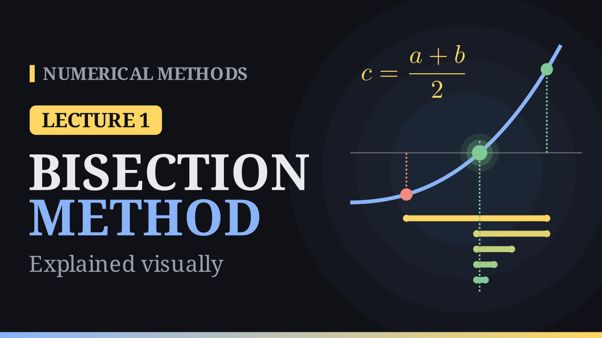
6:38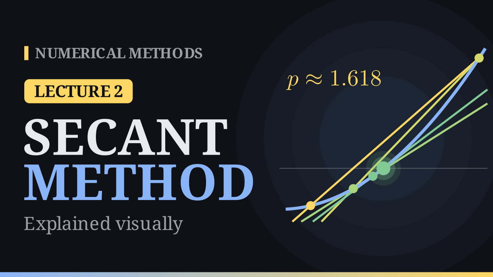
7:46Lecture 2
The Secant Method
Replace the curve by a line through two points. Order 1.618, the golden ratio.
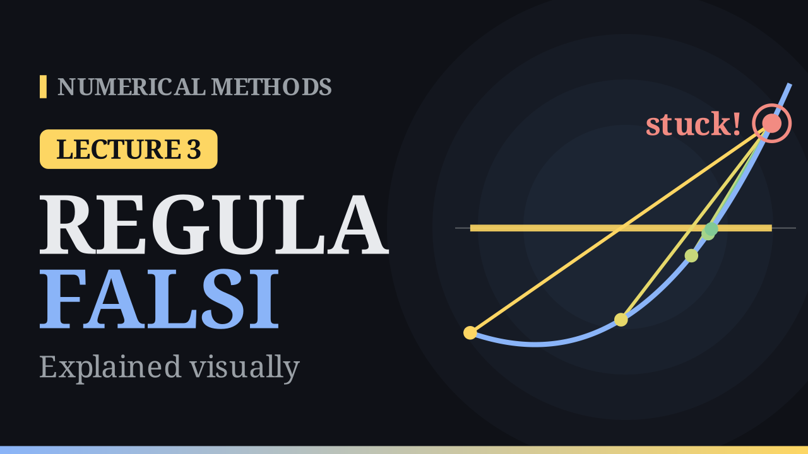
7:07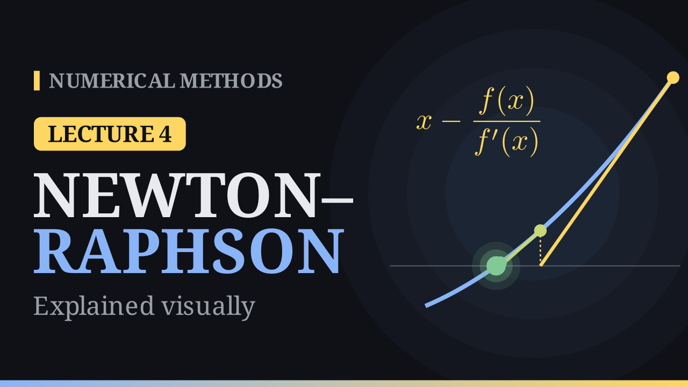
7:31Lecture 4
The Newton–Raphson Method
Follow the tangent to the axis. Quadratic convergence and its failures.
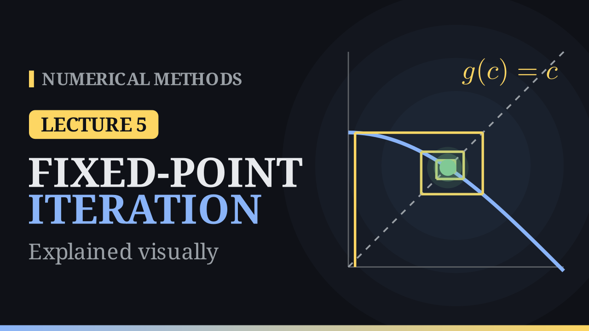
7:07Lecture 5
Fixed-Point Iteration
Rewrite f(x) = 0 as x = g(x) and read the behaviour off a cobweb diagram.
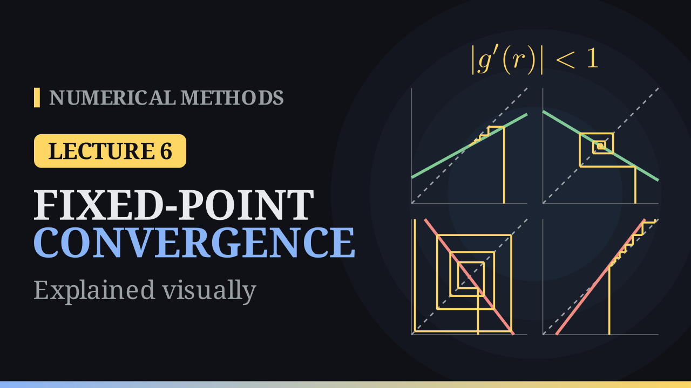
7:25Lecture 6
Convergence of Fixed-Point Iteration
Contraction mappings, error bounds, and the rate |g′(r)|.
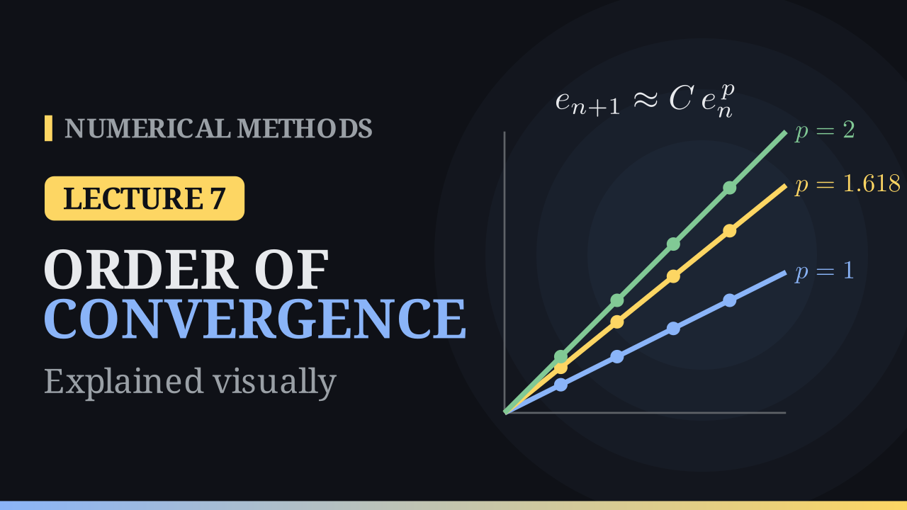
7:47Lecture 7
Order of Convergence and Modified Newton
Measuring the order p, multiple roots, and restoring quadratic speed.
-
02Lectures 8–9 Available
Computer arithmetic
Errors, floating-point numbers, machine epsilon, loss of significance
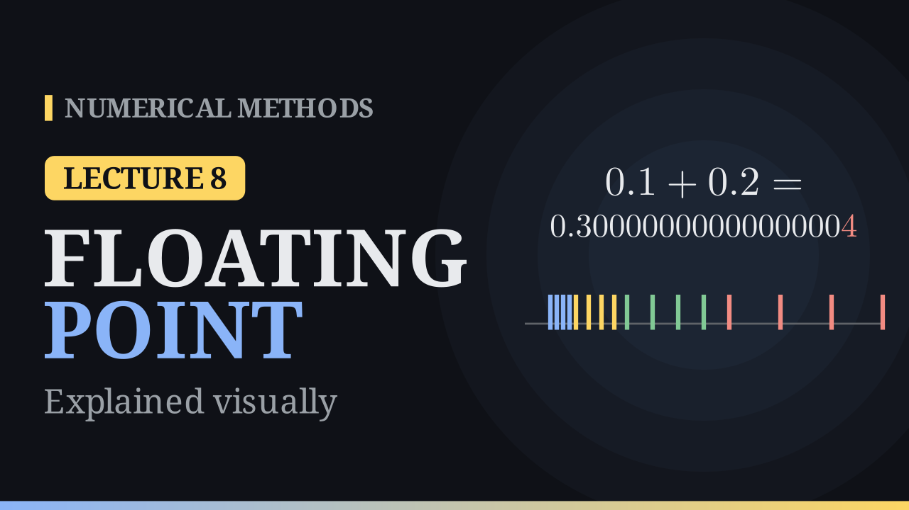
8:44Lecture 8
Errors and Floating-Point Numbers
Why 0.1 + 0.2 is not 0.3: binary, floating-point systems, chopping and rounding.
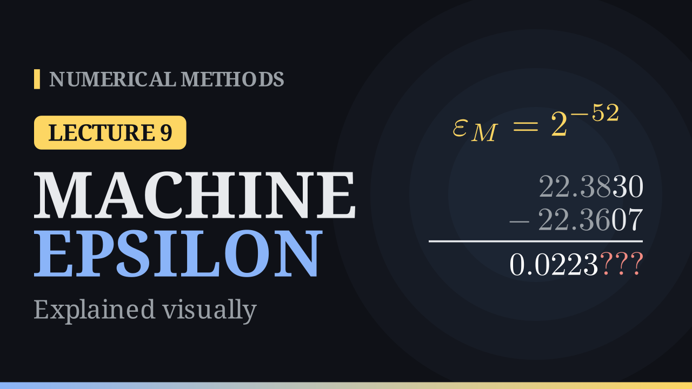
8:56Lecture 9
Machine Epsilon and Loss of Significance
Machine epsilon, catastrophic cancellation and how to avoid it, IEEE 754.
-
03Lectures 10–20 In progress
Linear systems
Gaussian elimination, pivoting, LU and Cholesky, norms, conditioning, iterative methods
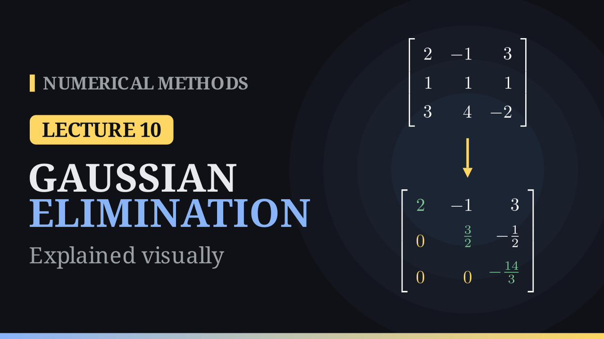
7:20Lecture 10
Gaussian Elimination
Row operations, back substitution, pivots and the determinant, and when elimination fails.
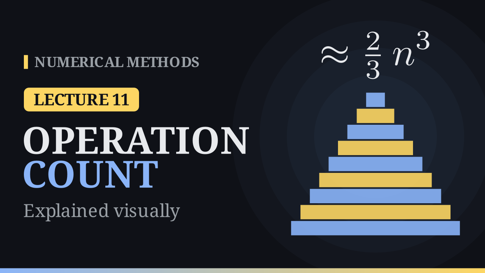
7:33Lecture 11
Operation Count of Gaussian Elimination
Why elimination costs about two-thirds n cubed, and why Cramer's rule and inverses are wasteful.
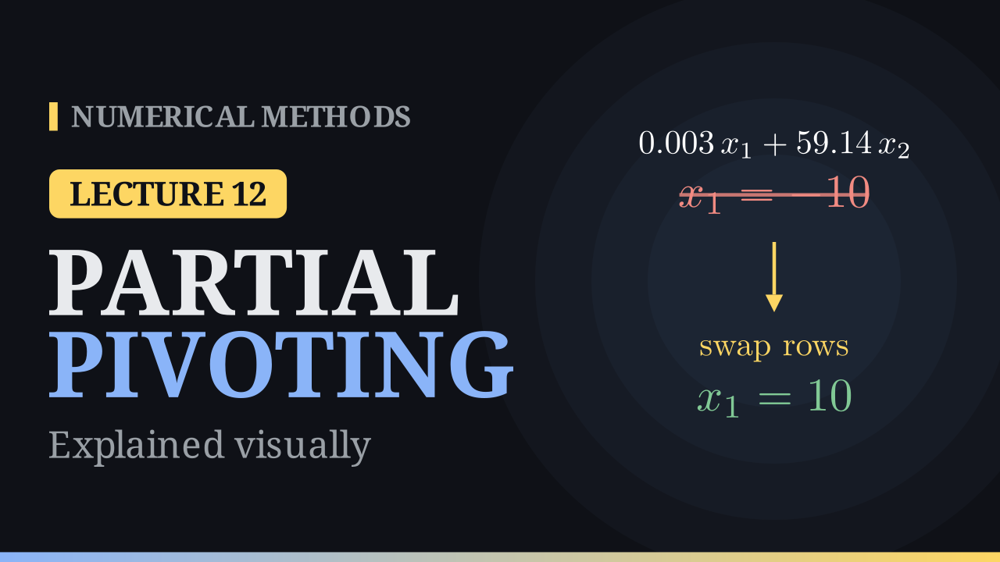
7:49Lecture 12
Partial and Complete Pivoting
Why small pivots ruin elimination, and how row and column swaps make it safe.
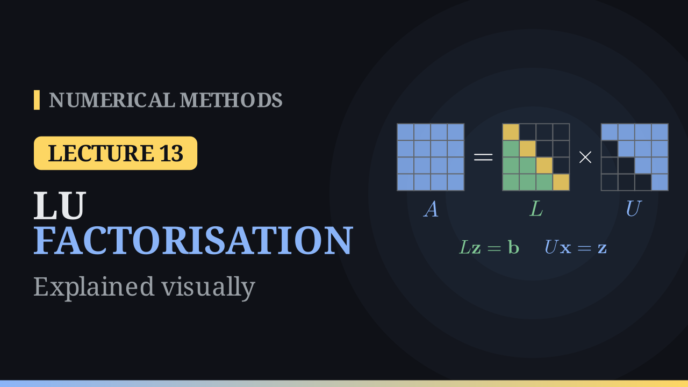
9:21Lecture 13
LU Factorisation
Keep the multipliers of elimination: A = LU, two triangular solves, Doolittle, Crout and PA = LU.
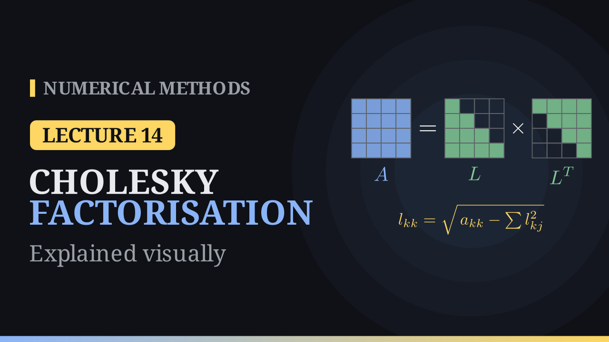
7:31Lecture 14
Cholesky Factorisation
Symmetric positive definite matrices: A = LLᵀ at half the cost of LU, with no pivoting.
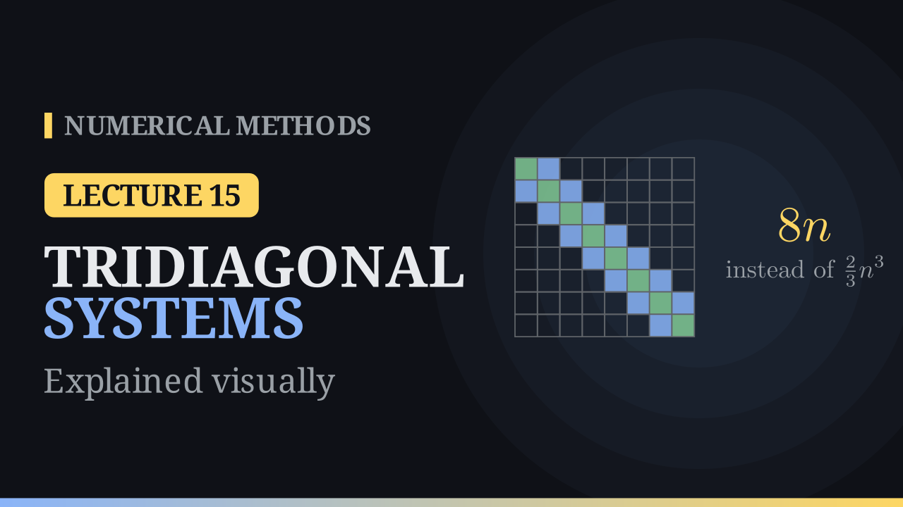
7:53Lecture 15
Systems with Simple Structure
Diagonal, triangular and tridiagonal systems: back substitution and the Thomas algorithm in 8n operations.
-
04Lectures 21–23 Coming
Eigenvalues
The power method, inverse and shifted inverse power methods
-
05Lectures 24–25 Coming
Least squares
Fitting lines and polynomials to data
-
06Lectures 26–29 Coming
Interpolation
Lagrange and Newton forms, the error term, the Runge phenomenon
-
07Lectures 30–35 Coming
Numerical integration
Trapezoidal and Simpson rules, Gauss–Legendre quadrature
-
08Lectures 36–42 Coming
Differential equations
Euler, Taylor and Runge–Kutta methods, stability and stiffness
How each lecture works
Watch, read, practise
- 1
Watch
A 7-minute animated video builds the idea step by step: graphs, worked examples and failure cases.
- 2
Read
The notes collect the formulas, the worked example, the algorithm and the error analysis in one place.
- 3
Practise
Nine short interactive tasks with live plots, hints and instant feedback. Keep a calculator ready (your phone's calculator app is fine). Progress is saved as you go.
Start with the bisection method
Lecture 1 introduces the problem of solving \(f(x) = 0\) and the simplest method that always works.
Go to Lecture 1